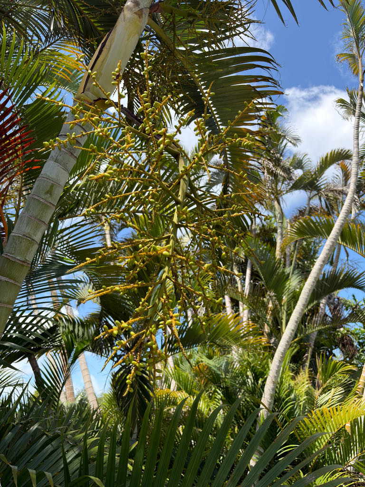

- Most people know the Areca Palm as a modest potted houseplant or privacy barrier. At Palma Sola Botanical Park, our main entrance shows what the species actually becomes when given decades and room to grow: towering, multi-stemmed columns that function as a living botanical gateway.
- The Areca Palm is critically endangered in the wild. Its entire natural population — confined to a narrow strip of coastal white-sand forest in northeastern Madagascar — is estimated at roughly a thousand or so individual plants. The species survives globally today almost entirely because humans moved it into cultivation.
- This palm is dioecious: every plant is either male or female, and a single tree cannot set fruit on its own. Pollination is carried out by insects, principally bees.
- The species name lutescens is Latin for 'growing yellow' — a trait on full display right here at the park entrance. As afternoon sun hits the welcome-island canopy, the bamboo-like petioles and stems deepen into a rich golden-orange. That color is not a sign of nutrient trouble; it is exactly what this palm is supposed to do.
The Areca Palm is endemic to the northeastern coast of Madagascar, where it grows in a very specific habitat: white-sand coastal forest in a narrow strip close to the Indian Ocean, from roughly Mahanoro north to Antalaha. In the wild it also turns up along rivers and in low-lying swampy ground at elevations up to a few hundred meters.
Despite being abundant in cultivation worldwide, the wild population is small and shrinking because of habitat loss, and the species is classified as endangered in its native range. The contrast is striking — one of the most widely grown palms on Earth, and genuinely rare where it actually belongs.
How and exactly when it reached Florida cultivation is not well documented, but it was distributed through tropical botanical gardens as early as the 1700s in the Caribbean Basin. Today it is one of the most commonly planted palms in South Florida landscapes and one of the most recognizable houseplants in the world.
- The clumping growth habit is one of this palm's defining features. Multiple slender stems — each just two to three inches in diameter — arise from a shared base and are ringed along their length with tightly packed leaf-scar bands that shift from orange and yellow near the top to darker tones lower down.
- In bright sun the stems take on a warm golden cast that gives the Golden Cane Palm one of its most apt common names.
- Despite being a palm, the Areca behaves almost like a large grass clump in the landscape: new shoots push up from the base over time, gradually widening the colony. This makes it excellent for screening and natural fencing, but it also means the clump needs room to spread — mature specimens can reach ten feet wide.
- The Areca Palm's tolerance for shade and indoor conditions made it one of the most popular houseplants of the 20th century. In temperate climates it is almost always grown in containers, kept indoors through winter, and prized for the texture its feathery fronds bring to interior spaces.
The inflorescences — branching, yellow stalks that droop below the fronds — are pollinated by insects, with bees documented as the principal visitors. Because the palm is dioecious, only female trees produce fruit; the roughly one-inch egg-shaped drupes ripen from yellow to dark purple or black and are taken by birds in areas where the palm has naturalized.
In Florida, the Areca Palm's wildlife value is modest compared to native palms. It has no co-evolutionary history with local fauna and does not serve as a larval host for any Florida butterflies or moths. Visitors seeking the park's best pollinator habitat will find it among the native plantings.
Propagated from seed. The palm is dioecious — male and female flowers occur on separate individual plants — so fruit production requires both sexes nearby. New stems also arise continuously from the base, slowly expanding the clump over time, but each clump traces back to a single seeded origin.
Branching yellow stalks emerge from below the leaf bases and droop downward. Male and female inflorescences look similar but occur on separate trees. Pollination is primarily by insects, principally bees.
Approximately one inch long and egg-shaped. Fruit begins yellow and ripens to dark purple or nearly black. Each contains a single seed. Not edible.
Pinnately compound, six to eight feet long, with lance-shaped leaflets arranged in a distinct V-shape along an orange to light-green rachis. Overall frond shape is broadly ovoid. Leaves are yellowish-green to dark green depending on light and nutrition.
Multi-stemmed from a shared base; each stem is two to three inches in diameter. Tightly packed ring-shaped leaf scars run the full length of each stem and range from orange and yellow near the crown to darker green lower down, with paler coloring where stems receive more direct sun.
You are standing at our welcome island — one of the best places in any Florida garden to see what an Areca Palm can actually become.
Start at the base and count the stems: dozens of slender, golden, bamboo-like trunks all erupt from a single shared anchor point, a scale that is almost never seen in landscapes where these palms are kept clipped as hedges.
Follow one stem upward and watch the color shift — bright orange and yellow rings near the crown give way to smoother, darker tones lower down, a living record of the stem's age. If the palm is fruiting, look just below the fronds for cascading clusters of small egg-shaped drupes.
On a female tree with ripe fruit, the full ripening sequence — pale yellow through orange to deep purple-black — can appear within a single cluster at once.
The ASPCA lists this palm as non-toxic to dogs, cats, and horses. The fruit is not a food source for people — the flesh around the seed is minimal and not palatable — but it is harmless. Otherwise this is a low-hazard plant with no known irritants or dangerous sap.
The name printed on this sign — Chrysalidocarpus lutescens — is the original name Hermann Wendland gave the species in 1878. It was widely replaced by Dypsis lutescens after a 1995 revision, and a 2022 molecular study (Eiserhardt et al.) has since proposed reinstating Chrysalidocarpus. The Atlas of Florida Plants notes the reinstatement; both names appear in current literature.
The park uses the original name here.
Potassium deficiency is a common issue for Areca Palms grown in Florida's sandy soils. Symptoms — translucent yellow spots on older leaflets — can look alarming but are distinct from the natural golden-yellow color of the petioles and stems, which is simply what this palm does.


- © Ruby Meador (CC-BY-NC), via iNaturalist
- © Randall Carter (CC-BY-NC), via iNaturalist